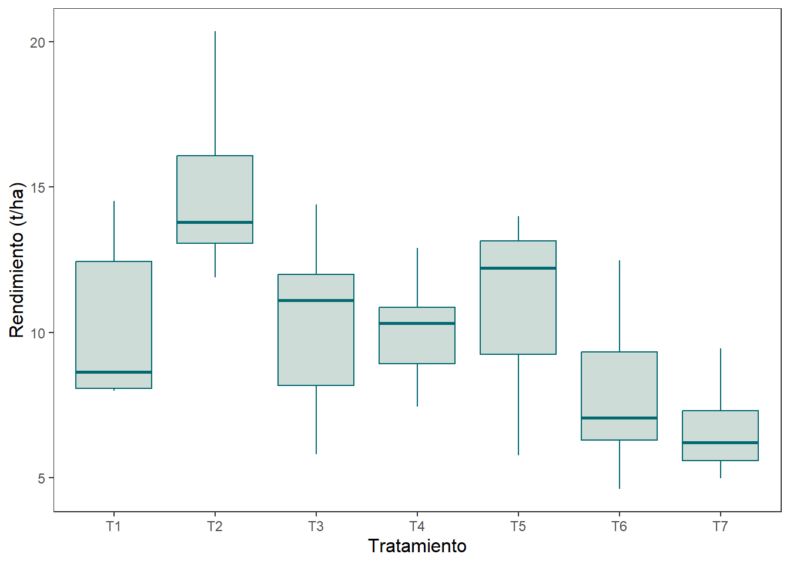
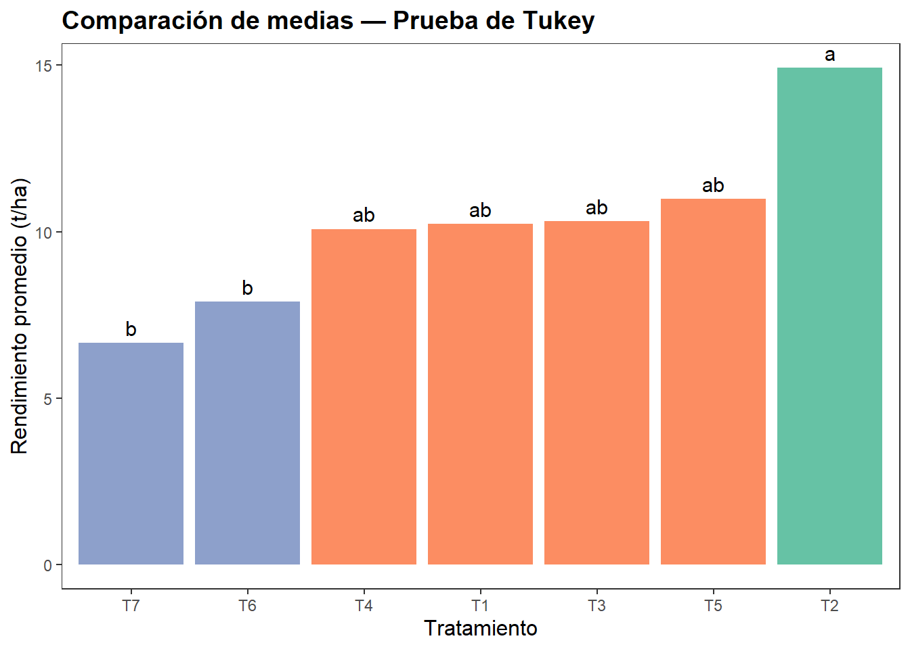
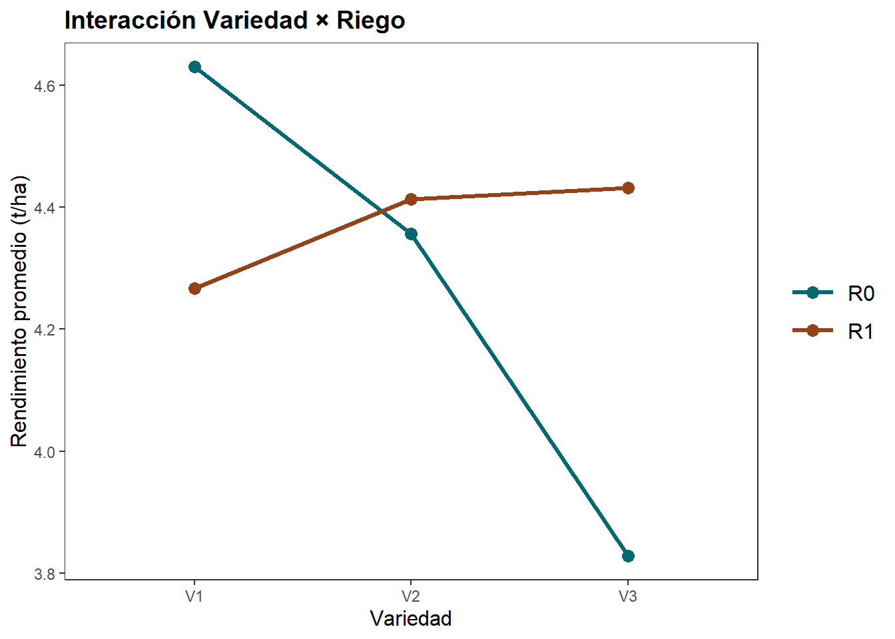
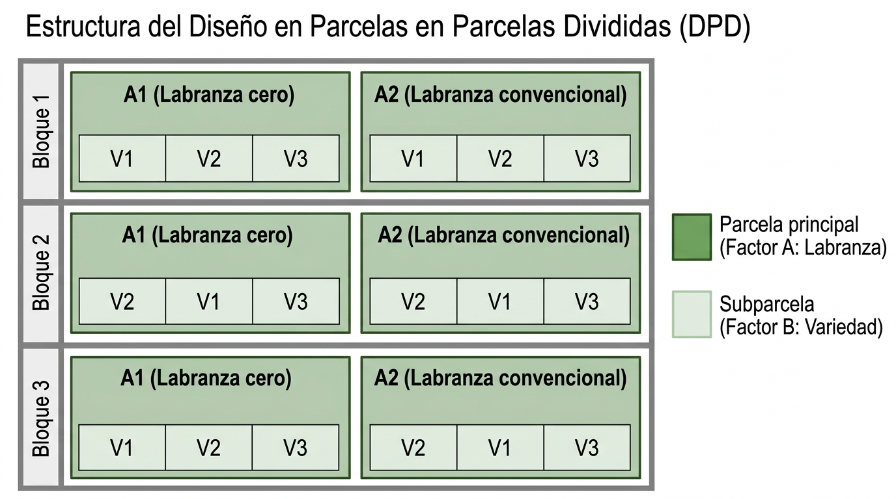
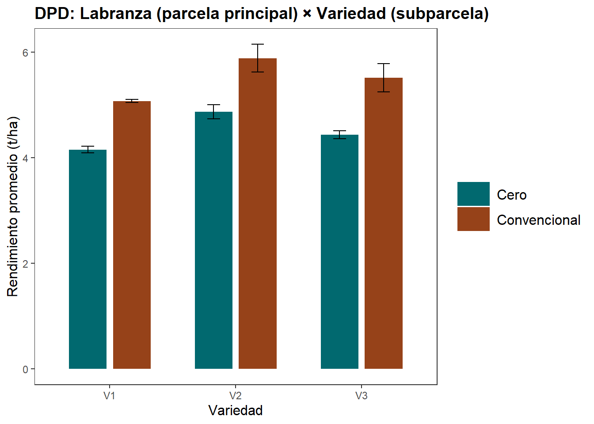

tratamientos <- c("A", "B", "C")
sample(tratamientos)[1] "A" "C" "B"Al finalizar este capítulo, el estudiante será capaz de:
aov() y el paquete agricolae.En investigación agrícola, las diferencias observadas entre tratamientos no siempre se deben exclusivamente al tratamiento que se desea evaluar. En un experimento de campo, variables como la fertilidad del suelo, la humedad, la sombra, la presencia de malezas, la presión de plagas o pequeñas variaciones en el manejo agronómico pueden influir sobre la respuesta observada. Por esta razón, para obtener conclusiones válidas no basta con aplicar tratamientos y comparar resultados: es necesario planificar cuidadosamente cómo se asignarán los tratamientos a las unidades experimentales y cómo se controlará la variabilidad natural del ambiente.
Supongamos que se desea comparar dos variedades de maíz: una variedad estándar ya conocida, a la que llamaremos V1, y una variedad nueva, a la que llamaremos V2. Una posibilidad aparentemente sencilla sería sembrar la mitad de un campo con V1 y la otra mitad con V2, manejar ambas zonas de la misma manera durante todo el ciclo y, al final, comparar el rendimiento obtenido. Si la variedad nueva produce un 20 % más que la variedad estándar, podría pensarse que V2 es superior. Sin embargo, esta conclusión no sería necesariamente correcta. La diferencia observada podría deberse, total o parcialmente, a otras causas:
En este caso, el experimento no fue preparado para controlar la variabilidad del campo, por lo que no es posible saber con certeza si la diferencia en rendimiento se debe realmente a la variedad o a diferencias en las condiciones de cultivo. Además, al no existir repeticiones adecuadas, tampoco sería posible estimar el error experimental ni aplicar correctamente una prueba estadística.
El diseño de experimentos surge precisamente para resolver este problema. Su propósito es organizar los tratamientos y las unidades experimentales de tal manera que sea posible separar el efecto real de los tratamientos de la variabilidad natural del ambiente. Con un diseño experimental y un análisis estadístico adecuados, el investigador puede reducir el sesgo, mejorar la precisión de sus resultados y determinar si las diferencias observadas entre tratamientos son estadísticamente significativas.
Aunque el diseño de experimentos tuvo su desarrollo formal en la agricultura, especialmente a partir del trabajo de Ronald A. Fisher en las décadas de 1920 y 1930 en la Estación Experimental de Rothamsted, sus principios se aplican hoy en muchas otras áreas. Fisher mostró que era posible obtener conclusiones válidas aun en presencia de fluctuaciones naturales como la temperatura, las condiciones del suelo o la lluvia, sentando así las bases de la experimentación moderna.
En la Sección 2.6 se presentaron los tipos de estudio. En este capítulo se desarrollan los principios básicos del diseño experimental y los principales diseños utilizados en agricultura, así como su relación con el análisis de varianza y la comparación de tratamientos.
Antes de estudiar los distintos diseños experimentales, es necesario definir algunos conceptos fundamentales que aparecen con frecuencia en la planificación y análisis de experimentos agrícolas.
1. Unidad experimental
La unidad experimental es el objeto o espacio al cual se aplica un tratamiento de manera independiente y sobre el cual se evalúa la respuesta del experimento. Dependiendo del tipo de estudio, la unidad experimental puede ser un animal, un árbol, una planta individual o una parcela de terreno. En experimentos de campo es común que la unidad experimental sea una parcela.
El efecto borde se refiere a las diferencias en crecimiento o producción que pueden presentar las plantas ubicadas en los bordes de una parcela en comparación con las plantas ubicadas en el interior. Este fenómeno puede ocurrir por:
Para reducir este efecto, es común excluir las plantas del perímetro al momento de realizar las mediciones o definir áreas útiles dentro de la parcela.
2. Factor
Un factor es una variable controlada o de interés en un experimento cuyos niveles se comparan para evaluar su efecto sobre una variable respuesta. Los niveles de un factor determinan los tratamientos cuando se considera un solo factor.
3. Tratamiento
Un tratamiento es la condición o intervención cuyo efecto se desea evaluar en un experimento. Cuando un experimento incluye varios factores, un tratamiento corresponde a una combinación específica de niveles de esos factores. Ejemplos: variedades de cultivos, dosis de fertilizante, programas de riego, diferentes herbicidas o fungicidas.
4. Unidad de muestreo
La unidad de muestreo es la entidad específica sobre la cual se realiza la medición de la variable de interés. En algunos casos coincide con la unidad experimental, pero en otros corresponde a una fracción de esta.
Por ejemplo: si el tratamiento se aplica a una parcela, pero la medición se realiza en 10 plantas dentro de la parcela, la parcela es la unidad experimental y cada planta medida es una unidad de muestreo.
La pseudorreplicación ocurre cuando varias mediciones tomadas dentro de una misma unidad experimental se analizan como si fueran repeticiones independientes del tratamiento. Esto puede inflar artificialmente el tamaño de muestra y conducir a conclusiones incorrectas.
5. Variable respuesta
La variable respuesta es la medición observada en cada unidad experimental y representa el resultado que se desea explicar o predecir a partir de los factores estudiados. Puede ser cuantitativa (rendimiento, altura, peso) o cualitativa (sí/no, presencia/ausencia, categoría).
6. Error experimental
El error experimental es la variabilidad observada entre unidades experimentales que reciben el mismo tratamiento. Representa la variabilidad de la variable respuesta que no puede ser explicada por los tratamientos incluidos en el experimento.
7. Repeticiones
Las repeticiones (o replicaciones) corresponden al número de unidades experimentales que reciben el mismo tratamiento dentro de un experimento.
En muchos experimentos agrícolas se utilizan al menos tres o cuatro repeticiones por tratamiento, aunque en algunos casos pueden requerirse más.
En el diseño de experimentos, el control del error experimental consiste en reducir, en la mayor medida posible, la variabilidad de la respuesta que no se debe a los tratamientos estudiados. Para lograrlo, el diseño experimental se apoya en tres principios fundamentales: aleatorización, repetición y bloqueo.
La aleatorización consiste en asignar los tratamientos al azar a las unidades experimentales. Su propósito principal es evitar sesgos sistemáticos y distribuir, de la forma más equilibrada posible, las fuentes desconocidas de variación entre los tratamientos.
En R, una asignación aleatoria simple puede realizarse con la función sample():
tratamientos <- c("A", "B", "C")
sample(tratamientos)[1] "A" "C" "B"Ejemplo: si se comparan tres fertilizantes en un lote, no conviene asignarlos siempre en el mismo orden espacial, porque una parte del terreno podría tener mejores condiciones que otra.
La siguiente herramienta permite visualizar cómo se distribuyen los tratamientos en un DCA o en un DBCA según el número de tratamientos y repeticiones. Haz clic en Nueva aleatorización para generar un nuevo arreglo al azar.
La repetición consiste en aplicar cada tratamiento a varias unidades experimentales independientes. Gracias a la repetición es posible estimar el error experimental y aumentar la precisión de las comparaciones entre tratamientos.
Ejemplo: si se desea comparar cuatro variedades de maíz, no es suficiente sembrar una sola parcela por variedad. Se necesitan varias parcelas para cada variedad.
El bloqueo o control local consiste en agrupar unidades experimentales similares en bloques y asignar los tratamientos dentro de cada bloque. Su objetivo es controlar fuentes conocidas de variación que podrían afectar la respuesta del experimento.
Ejemplo: si un lote presenta un gradiente de fertilidad de un extremo al otro, puede dividirse en bloques perpendiculares a ese gradiente. Luego, dentro de cada bloque, se asignan aleatoriamente los tratamientos.
El diseño completamente al azar (DCA) es el diseño experimental más simple. En este diseño, los tratamientos se asignan aleatoriamente a las unidades experimentales, de manera que cada unidad tenga la misma probabilidad de recibir cualquiera de los tratamientos.
El DCA funciona mejor cuando las unidades experimentales son relativamente homogéneas. Por esta razón, suele utilizarse en condiciones muy controladas: ensayos en invernadero, cámaras de crecimiento, laboratorios, o experimentos de campo realizados en áreas muy uniformes.
| Aspecto | Descripción |
|---|---|
| ✅ Ventaja | Es el diseño más sencillo de implementar |
| ✅ Ventaja | Permite gran flexibilidad en el número de tratamientos y repeticiones |
| ✅ Ventaja | Su análisis estadístico es relativamente simple |
| ❌ Limitación | No controla fuentes conocidas de variación |
| ❌ Limitación | Puede ser poco eficiente en experimentos de campo heterogéneos |
El modelo matemático del DCA es:
\[ y_{ij} = \mu + \alpha_i + \epsilon_{ij} \tag{8.1}\]
donde:
agricolaelibrary(agricolae)
tratamientos <- c("T1", "T2", "T3", "T4")
dca <- design.crd(
trt = tratamientos,
r = 3,
seed = 123,
serie = 2
)
dca$book plots r tratamientos
1 101 1 T3
2 102 2 T3
3 103 1 T1
4 104 1 T2
5 105 3 T3
6 106 2 T1
7 107 2 T2
8 108 1 T4
9 109 3 T2
10 110 2 T4
11 111 3 T1
12 112 3 T4La tabla generada muestra la distribución aleatoria de los tratamientos en las unidades experimentales. En este ejemplo hay 4 tratamientos × 3 repeticiones = 12 unidades experimentales en total.
El Análisis De Varianza o prueba ANOVA es una técnica utilizada para comparar las medias de más de dos grupos o tratamientos. Su lógica consiste en descomponer la variabilidad total observada en los datos en componentes atribuibles a distintas fuentes:
Las hipótesis del ANOVA son:
\[ \begin{cases} H_0: \mu_1 = \mu_2 = \ldots = \mu_k \\ H_1: \exists \; i, \; j \; \text{tal que} \; \mu_i \neq \mu_j \end{cases} \]
El ANOVA no indica directamente entre cuáles tratamientos existen diferencias, sino únicamente si hay evidencia estadística de que al menos una media es distinta.
Los datos de un experimento de un factor único con \(k\) tratamientos y \(r\) repeticiones se representan como en la Tabla 8.1:
| Trat.-Nivel | Rep. 1 | Rep. 2 | \(\ldots\) | Rep. \(r\) |
|---|---|---|---|---|
| 1 | \(y_{11}\) | \(y_{12}\) | \(\ldots\) | \(y_{1r}\) |
| 2 | \(y_{21}\) | \(y_{22}\) | \(\ldots\) | \(y_{2r}\) |
| \(\vdots\) | \(\vdots\) | \(\vdots\) | \(\ldots\) | \(\vdots\) |
| \(k\) | \(y_{k1}\) | \(y_{k2}\) | \(\ldots\) | \(y_{kr}\) |
El modelo de efectos es:
\[ y_{ij} = \mu + \alpha_i + \epsilon_{ij} \quad \forall \; i,j \tag{8.2}\]
donde \(\mu\) es la media general y \(\alpha_i\) es el efecto del tratamiento \(i\).
La variabilidad total se descompone como:
\[ SCT = SCTr + SCE \tag{8.3}\]
donde \(SCTr\) es la suma de cuadrados de tratamientos y \(SCE\) es la suma de cuadrados del error.
El estadístico de prueba es:
\[ F = \frac{MCTr}{MCE} = \frac{SCTr / (k-1)}{SCE / (n-k)} \tag{8.4}\]
La Tabla 8.2 resume el procedimiento:
| Fuente | GL | SC | MC | \(F\) |
|---|---|---|---|---|
| Tratamientos | \(k-1\) | \(SCTr = \sum_i n_i (\bar{y}_i - \bar{y})^2\) | \(MCTr = SCTr/(k-1)\) | \(F = MCTr/MCE\) |
| Error | \(n-k\) | \(SCE = \sum_i\sum_j (y_{ij}-\bar{y}_i)^2\) | \(MCE = SCE/(n-k)\) | |
| Total | \(n-1\) | \(SCT\) |
Ajusta los sliders para ver cómo cambia la partición de la varianza total en componentes “entre tratamientos” (SCTr) y “dentro de tratamientos” (SCE), y cómo eso afecta el estadístico F y el valor \(p\).
¿Qué observar? Cuando las medias de los tratamientos están muy separadas, el SCTr crece y F aumenta. Cuando σ es grande, el SCE domina y F disminuye. El valor p cae por debajo de 0.05 cuando la señal entre grupos supera claramente el ruido dentro de los grupos.
Para que las conclusiones del ANOVA sean válidas, deben cumplirse los siguientes supuestos sobre los errores \(\epsilon_{ij}\):
En R, estos supuestos pueden verificarse con los gráficos de diagnóstico del modelo:
par(mfrow = c(2, 2))
plot(mod) # donde mod es el objeto aov()| Supuesto | Función en R | Prueba |
|---|---|---|
| Normalidad de residuos | shapiro.test(residuals(mod)) |
Shapiro-Wilk |
| Homocedasticidad | bartlett.test(y ~ trt, data) |
Bartlett |
| Homocedasticidad (alternativa) | leveneTest(y ~ trt, data) del paquete car |
Levene |
| Homocedasticidad (robusta) | fligner.test(y ~ trt, data) |
Fligner-Killeen |
La prueba de Levene es más robusta que Bartlett cuando los datos se desvían de la normalidad. Maxwell, Delaney y Kelley (2018) recomiendan usar una prueba alternativa cuando se cumple:
\[\frac{n_{max}}{n_{min}} \times \frac{s^2_{min}}{s^2_{max}} > 4\]
La prueba ANOVA es bastante robusta a la violación del supuesto de normalidad cuando los tamaños de los grupos son idénticos y los grados de libertad del error son mayores a 20. Sin embargo, la heterogeneidad de varianzas es un problema importante cuando los tamaños de los grupos son distintos y los grupos son pequeños.
Ajusta los grados de libertad y el nivel de significancia. Mueve el slider de F observado para ver si tu valor cae en la zona de rechazo (área roja).
Cuando los supuestos no se cumplen, una alternativa previa a las pruebas no paramétricas es transformar los datos. La Tabla 8.3 resume las transformaciones más utilizadas.
| Transformación | Fórmula | Uso recomendado |
|---|---|---|
| Logarítmica | \(\log(y)\) o \(\log(y + C)\) | Sesgo marcado; desviaciones proporcionales a las medias; efecto multiplicativo de los factores |
| Raíz cuadrada | \(\sqrt{y}\) o \(\sqrt{y + C}\) | Varianzas proporcionales a las medias; conteos |
| Inversa | \(1/y\) o \(1/(y + C)\) | Elevada variabilidad; varianzas proporcionales a la media elevada a 4 |
| Arcoseno | \(\arcsin(\sqrt{p})\) | Proporciones y porcentajes |
En todos los casos donde se usan constantes \(C\), se agregan cuando los datos contienen ceros o valores muy pequeños. En R las transformaciones se aplican directamente en la fórmula: aov(log(y) ~ trt, data) o aov(sqrt(y) ~ trt, data).
A modo de ejemplo vamos a analizar los datos correspondientes a la última medición del proyecto de Alfredo Aguilar y José C. Flores para verificar la existencia de diferencias significativas en la altura entre los tratamientos.
library(tidyverse)
library(readxl)
datos24004 <- read_excel("datos/datos24004.xlsx", sheet = "datos")
datos24004 <- datos24004 |>
mutate(
DDS = as.numeric(Fecha - Siembra)
)
dds56 <- datos24004 |>
filter(DDS == 56)mod1 <- aov(Altura ~ Tratamiento, data = dds56)
summary(mod1) Df Sum Sq Mean Sq F value Pr(>F)
Tratamiento 6 3965 660.8 1.257 0.284
Residuals 98 51518 525.7 Se observa que \(SCTr < SCE\), lo que sugiere que la mayor parte de la variabilidad en la altura no se explica por los tratamientos. El valor \(p\) de la prueba ANOVA es 0.2844, mayor a \(\alpha = 0.05\).
Comparamos el valor \(p\) contra \(\alpha = 0.05\) por convención y porque funciona muy bien como equilibrio entre los errores tipo I y tipo II. Como dato histórico, Ronald Fisher propuso este umbral práctico. Siempre es recomendable preguntarse:
¿Qué es más grave en este contexto: rechazar una hipótesis verdadera o no detectar una diferencia real?
Ahora trabajamos con los datos del rendimiento en toneladas por hectárea:
rend24004 <- read_excel("datos/rend_24004.xlsx", sheet = "rendimiento_ha")
resu_rend <- rend24004 |>
group_by(Tratamiento) |>
summarise(
Media = mean(Rendimiento_ha),
Desv = sd(Rendimiento_ha)
)| Tratamiento | Media | Desv |
|---|---|---|
| T1 | 10.231230 | 2.986958 |
| T2 | 14.919665 | 3.121122 |
| T3 | 10.313008 | 3.182815 |
| T4 | 10.076396 | 1.912941 |
| T5 | 10.979170 | 3.235731 |
| T6 | 7.888415 | 2.855456 |
| T7 | 6.650138 | 1.648281 |

mod2 <- aov(Rendimiento_ha ~ Tratamiento, data = rend24004)
summary(mod2) Df Sum Sq Mean Sq F value Pr(>F)
Tratamiento 6 245 40.84 5.314 0.000552 ***
Residuals 35 269 7.68
---
Signif. codes: 0 '***' 0.001 '**' 0.01 '*' 0.05 '.' 0.1 ' ' 1El valor \(p\) es muy bajo, inclusive menor que \(0.001\). Hay suficiente evidencia estadística para rechazar \(H_0\). Se concluye que los tratamientos tienen un efecto significativo sobre el rendimiento: al menos uno de los tratamientos presenta una media significativamente distinta respecto a los demás.
Cuando la prueba ANOVA es estadísticamente significativa, el paso posterior consiste en buscar entre qué grupos existen diferencias. En algunos casos el investigador podría tener comparaciones planificadas (contrastes a priori); en otros podría no tener hipótesis predefinidas (contrastes a posteriori).
Los contrastes planificados se definen antes de observar los datos, con base en hipótesis sustentadas teóricamente.
Cuando se desea comparar un conjunto de medias, una a una, contra un único tratamiento control, se utiliza el test de Dunnett. Es la prueba más potente para este propósito específico. El valor crítico se establece para que la tasa de error experimental sea \(\alpha\):
\[ C = d_{(\alpha_e, \, a-1, \, \gamma)} \times S_{\bar{D}} \]
donde \(S_{\bar{D}}\) es el error estándar de la diferencia entre dos medias, \(d\) es el estadístico de Dunnett con \(\gamma\) grados de libertad del error y \(a\) medias.
El test de Hsu se usa cuando, en lugar de comparar con la media del control, se busca el mejor tratamiento (mayor o menor media). Es un método conservador, pero al reducir el número de comparaciones, aumenta la protección contra el error tipo II.
Dos contrastes \(C_1\) y \(C_2\) con coeficientes \(c_{1i}\) y \(c_{2i}\) son ortogonales (independientes) si:
\[ \sum_{i=1}^k c_{1i} \cdot c_{2i} = 0 \]
Reglas para definir contrastes ortogonales:
Los contrastes polinomiales se utilizan cuando los niveles del factor están ordenados cuantitativamente (por ejemplo, dosis de un fertilizante). Sirven para detectar tendencias lineales, cuadráticas o cúbicas.
En R los contrastes polinomiales pueden obtenerse con contr.poly(k):
# Contrastes polinomiales para 4 niveles (dosis: 0, 50, 100, 150 kg/ha)
contr.poly(4) .L .Q .C
[1,] -0.6708204 0.5 -0.2236068
[2,] -0.2236068 -0.5 0.6708204
[3,] 0.2236068 -0.5 -0.6708204
[4,] 0.6708204 0.5 0.2236068Los contrastes a posteriori (también llamados post hoc) son comparaciones que se realizan después del ANOVA, cuando no se tenían hipótesis predefinidas. Se pueden clasificar en dos grandes categorías:
El orden de protección frente al error de tipo I, de menor a mayor, es:
\[\text{LSD} \leq \text{BLSD} < \text{Duncan} < \text{SNK} < \text{Tukey} < \text{Sidak} < \text{Bonferroni} < \text{Scheffé}\]
Para todos los métodos a posteriori:
Es el valor crítico más bajo; el método menos conservador. Se calcula como:
\[ \text{MDS} = t_{(\alpha, \, \gamma)} \sqrt{MCE \left(\frac{1}{r_1} + \frac{1}{r_2}\right)} = t\sqrt{\frac{2 \cdot MCE}{r}} \]
donde \(t\) es el valor de la distribución \(t\) de Student con nivel de significancia \(\alpha\) y \(\gamma\) grados de libertad del error, \(MCE\) es la media cuadrática del error, y \(r\) es el número de repeticiones (cuando \(r_1 = r_2\)).
El error de tipo I aumenta a medida que aumenta el número de comparaciones. Se recomienda usarlo principalmente en contrastes a priori o cuando el número de comparaciones es pequeño.
Hace uso del estadístico \(q\) (rango estudentizado):
\[ Q = \frac{\bar{X}_i - \bar{X}_k}{\sqrt{MCE / n}} \]
El valor crítico se calcula tomando en cuenta el número de tratamientos, lo que lo hace más conservador que el LSD. Es aplicable a comparaciones por pares de medias y puede dar diferencias significativas aunque el valor \(F\) en el ANOVA no sea significativo. Requiere el mismo número de observaciones en las medias; la variante Tukey-Kramer resuelve el caso de muestras desiguales.
Estos métodos penalizan el valor de significancia \(p\) para controlar el error de tipo I por comparaciones múltiples:
Bonferroni es más conservador que Sidak. Ambos son útiles para un número bajo de comparaciones. El valor crítico se calcula como en el LSD, pero usando \(p^*\): \(t_{(p^*, \gamma)} \sqrt{\dfrac{2 \cdot MCE}{n}}\).
Es el método más conservador (valor crítico más elevado). Depende del valor \(F\) de la ANOVA:
\[ C = \sqrt{(k-1) \cdot F_{0.05}} \cdot \sqrt{\left(\frac{1}{n_1}+\frac{1}{n_2}\right) MCE} \]
Se recomienda cuando: - Cometer un error de tipo I tiene consecuencias graves. - Se desea comparar contrastes sugeridos por los datos. - El número de comparaciones es grande.
La Tabla 8.5 resume las principales características de cada método:
| Método | Datos normales | Fortaleza principal | Con control | En parejas | Nivel de confianza |
|---|---|---|---|---|---|
| Fisher LSD | Sí | Mayor potencia; sin protección simultánea | No | Sí | Individual |
| Tukey HSD | Sí | El más potente para comparaciones en parejas únicamente | No | Sí | Simultáneo |
| Dunnett | Sí | El más potente cuando se compara con un control | Sí | No | Simultáneo |
| Hsu MCB | Sí | El más potente para comparar con el mejor | No | Sí | Simultáneo |
| Bonferroni | Sí | El más conservador; pocas comparaciones | Ambos | Ambos | Simultáneo |
| Sidak | Sí | Similar a Bonferroni; levemente menos conservador | Ambos | Ambos | Simultáneo |
| Scheffé | Sí | Cualquier contraste; el más conservador | Ambos | Ambos | Simultáneo |
| Duncan | Sí | Menos conservador que Tukey | No | Sí | Individual |
| Scott-Knott | Sí | Agrupa sin solapamiento; basado en clúster | No | Sí | Simultáneo |
No existe un método único. La elección depende del experimento:
agricolaeLas pruebas de comparaciones múltiples en R se pueden realizar con las funciones del paquete agricolae:
| Función | Prueba |
|---|---|
LSD.test(mod, "trt") |
Fisher LSD |
HSD.test(mod, "trt") |
Tukey HSD |
scheffe.test(mod, "trt") |
Scheffé |
duncan.test(mod, "trt") |
Duncan |
SNK.test(mod, "trt") |
Student-Newman-Keuls |
A continuación se muestra cómo aplicar la prueba de Tukey al modelo de rendimiento:
comp_tukey <- HSD.test(mod2, "Tratamiento", group = TRUE)
comp_tukey$groups Rendimiento_ha groups
T2 14.919665 a
T5 10.979170 ab
T3 10.313008 ab
T1 10.231230 ab
T4 10.076395 ab
T6 7.888416 b
T7 6.650138 bgrupos <- comp_tukey$groups |>
rownames_to_column("Tratamiento")
ggplot(grupos, aes(x = reorder(Tratamiento, Rendimiento_ha),
y = Rendimiento_ha,
fill = groups)) +
geom_col(show.legend = FALSE) +
geom_text(aes(label = groups), vjust = -0.5, size = 4) +
scale_fill_brewer(palette = "Set2") +
jtools::theme_apa() +
labs(x = "Tratamiento", y = "Rendimiento promedio (t/ha)",
title = "Comparación de medias — Prueba de Tukey")
El coeficiente de variación es una medida de precisión del experimento. Se calcula como:
\[ CV = \frac{\sqrt{MCE}}{\bar{y}_{..}} \times 100 \]
donde \(MCE\) es la media cuadrática del error y \(\bar{y}_{..}\) es la media general del experimento. El paquete agricolae lo reporta automáticamente en las funciones de comparaciones múltiples.
Un CV alto indica que el error experimental es grande en relación con la media. Como referencia orientativa en experimentos agrícolas de campo:
La potencia es la probabilidad de rechazar \(H_0\) cuando realmente es falsa (detectar diferencias reales). Ajusta los parámetros para ver cuántas repeticiones necesitas.
Regla práctica: en experimentación agrícola se recomienda una potencia mínima del 80 % (línea punteada). Si la potencia actual es baja, aumenta el número de repeticiones o mejora el control ambiental del experimento (por ejemplo, usando DBCA en lugar de DCA para reducir σ).
El diseño de bloques completos al azar (DBCA) incorpora el principio de bloqueo para controlar una fuente de variación conocida. Este diseño es el más utilizado en experimentación agrícola de campo cuando existe heterogeneidad en el terreno.
Se usa el DBCA cuando:
En el DBCA, el campo experimental se divide en bloques lo más homogéneos posible. Dentro de cada bloque, todos los tratamientos aparecen exactamente una vez, asignados de manera aleatoria.
Bloque 1: [T3] [T1] [T4] [T2]
Bloque 2: [T2] [T4] [T1] [T3]
Bloque 3: [T1] [T3] [T2] [T4]
Bloque 4: [T4] [T2] [T3] [T1]\[ y_{ij} = \mu + \alpha_i + \beta_j + \epsilon_{ij} \tag{8.5}\]
donde:
| Fuente | GL | SC | MC | \(F\) |
|---|---|---|---|---|
| Bloques | \(b-1\) | \(SCB = I\sum_{j=1}^b(\bar{y}_{.j}-\bar{y}_{..})^2\) | \(MCB\) | \(MCB/MCE\) |
| Tratamientos | \(k-1\) | \(SCTr = b\sum_{i=1}^k(\bar{y}_{i.}-\bar{y}_{..})^2\) | \(MCTr\) | \(MCTr/MCE\) |
| Error | \((b-1)(k-1)\) | \(SCE\) | \(MCE\) | |
| Total | \(bk-1\) | \(SCT\) |
donde \(b\) es el número de bloques y \(k\) el número de tratamientos.
Cuando se aplica un DBCA, es útil calcular la eficiencia relativa (ER) para cuantificar cuánto más preciso es el DBCA respecto al DCA. Si la ER > 1, el bloqueo fue beneficioso.
\[ ER = \frac{(b-1) \cdot MCB + b(k-1) \cdot MCE}{(bk-1) \cdot MCE_{DCA}} \]
donde \(MCE_{DCA}\) es la media cuadrática del error estimada como si el experimento hubiera sido un DCA:
\[ MCE_{DCA} = \frac{(b-1) \cdot MCB + b(k-1) \cdot MCE}{bk - 1} \]
La función summary() del paquete agricolae al aplicar diseños con bloques reporta esta eficiencia.
Un \(ER = 1.40\) significa que se necesitarían un 40% más de repeticiones en el DCA para lograr la misma precisión que con el DBCA. Esto justifica el uso del bloqueo cuando existe heterogeneidad conocida en el material experimental.
library(agricolae)
tratamientos <- c("T1", "T2", "T3", "T4")
dbca <- design.rcbd(
trt = tratamientos,
r = 4, # número de bloques
seed = 456,
serie = 2
)
dbca$book plots block tratamientos
1 101 1 T3
2 102 1 T1
3 103 1 T2
4 104 1 T4
5 201 2 T4
6 202 2 T3
7 203 2 T1
8 204 2 T2
9 301 3 T1
10 302 3 T4
11 303 3 T2
12 304 3 T3
13 401 4 T2
14 402 4 T4
15 403 4 T1
16 404 4 T3Para el análisis estadístico con aov(), el bloque se incluye como factor adicional en la fórmula:
# Estructura del modelo para DBCA
mod_dbca <- aov(Rendimiento ~ Tratamiento + Bloque, data = datos_dbca)
summary(mod_dbca)| Situación | Diseño recomendado |
|---|---|
| Material experimental muy uniforme (laboratorio, invernadero) | DCA |
| Existe un gradiente o fuente de variación conocida en el campo | DBCA |
| Se desea aumentar la precisión controlando la heterogeneidad | DBCA |
| La variación ambiental es impredecible o pequeña | DCA |
En general, el DBCA es más eficiente que el DCA en condiciones de campo, ya que separa la variabilidad debida a los bloques del error experimental, reduciendo el error residual.
Supongamos un experimento con 4 variedades de arroz evaluadas en 3 bloques definidos por la disponibilidad de agua en el lote:
datos_arroz <- read_excel("datos/arroz_dbca.xlsx")
mod_arroz <- aov(Rendimiento ~ Variedad + Bloque, data = datos_arroz)
summary(mod_arroz)
# Comparaciones múltiples (Tukey)
comp_arroz <- HSD.test(mod_arroz, "Variedad", group = TRUE)
comp_arroz$groupsEl diseño de cuadrado latino permite controlar simultáneamente dos fuentes de variación conocidas, organizadas en filas y columnas. Es especialmente útil cuando existen dos gradientes perpendiculares en el terreno (por ejemplo, fertilidad en dirección norte-sur y humedad en dirección este-oeste).
En un cuadrado latino con \(k\) tratamientos:
Ejemplo: cuadrado latino 4×4
Col 1 Col 2 Col 3 Col 4
Fila 1 A B C D
Fila 2 B C D A
Fila 3 C D A B
Fila 4 D A B C\[ y_{ijk} = \mu + \alpha_i + \beta_j + \gamma_k + \epsilon_{ijk} \tag{8.6}\]
donde \(\alpha_i\) es el efecto del tratamiento \(i\), \(\beta_j\) es el efecto de la fila \(j\), \(\gamma_k\) es el efecto de la columna \(k\).
| Fuente | GL | SC | MC | \(F\) |
|---|---|---|---|---|
| Filas | \(k-1\) | \(SCF = k\sum_{i=1}^k(\bar{y}_{i.}-\bar{y}_{..})^2\) | \(MCF\) | \(MCF/MCE\) |
| Columnas | \(k-1\) | \(SCC = k\sum_{j=1}^k(\bar{y}_{.j}-\bar{y}_{..})^2\) | \(MCC\) | \(MCC/MCE\) |
| Tratamientos | \(k-1\) | \(SCTr = k\sum_{l=1}^k(\bar{y}_l-\bar{y}_{..})^2\) | \(MCTr\) | \(MCTr/MCE\) |
| Error | \((k-1)(k-2)\) | \(SCE\) | \(MCE\) | |
| Total | \(k^2-1\) | \(SCT\) |
agricolaecl <- design.lsd(
trt = c("A", "B", "C", "D"),
seed = 789,
serie = 2
)
cl$book plots row col c("A", "B", "C", "D")
1 101 1 1 A
2 102 1 2 C
3 103 1 3 B
4 104 1 4 D
5 201 2 1 D
6 202 2 2 B
7 203 2 3 A
8 204 2 4 C
9 301 3 1 B
10 302 3 2 D
11 303 3 3 C
12 304 3 4 A
13 401 4 1 C
14 402 4 2 A
15 403 4 3 D
16 404 4 4 BCambia el tipo de diseño para ver cómo se organizan las unidades experimentales y comprender la diferencia entre DCA, DBCA y Cuadrado Latino.
En el DBCA cada tratamiento aparece exactamente una vez por bloque (fila). En el Cuadrado Latino cada tratamiento aparece una sola vez en cada fila y cada columna — controlando dos fuentes de variación simultáneamente.
El diseño factorial evalúa simultáneamente el efecto de dos o más factores y, lo que es más importante, permite estudiar la interacción entre ellos. La interacción ocurre cuando el efecto de un factor depende del nivel del otro factor.
Un diseño factorial \(a \times b\) tiene:
Ejemplo: un experimento factorial \(3 \times 2\) con el factor Variedad (V1, V2, V3) y el factor Riego (R0, R1) produce \(3 \times 2 = 6\) combinaciones de tratamientos.
\[ y_{ijk} = \mu + \alpha_i + \beta_j + (\alpha\beta)_{ij} + \epsilon_{ijk} \tag{8.7}\]
donde \((\alpha\beta)_{ij}\) es el término de interacción entre los factores A y B.
Para tres factores (A, B, C), el modelo se extiende a:
\[ y_{ijlk} = \mu + \alpha_i + \beta_j + \tau_l + (\alpha\beta)_{ij} + (\alpha\tau)_{il} + (\beta\tau)_{jl} + (\alpha\beta\tau)_{ijl} + \epsilon_{ijlk} \tag{8.8}\]
donde se incluyen todas las posibles interacciones de dos y tres factores.
| Fuente | GL |
|---|---|
| Factor A | \(a - 1\) |
| Factor B | \(b - 1\) |
| Interacción A×B | \((a-1)(b-1)\) |
| Error | \(ab(r-1)\) |
| Total | \(abr - 1\) |
En R, el diseño factorial se especifica con el operador * (efectos principales + interacción) o : (solo interacción):
# Factorial: efectos principales de Variedad y Riego + su interacción
mod_fact <- aov(Rendimiento ~ Variedad * Riego, data = datos)
# Equivalente explícito:
mod_fact <- aov(Rendimiento ~ Variedad + Riego + Variedad:Riego, data = datos)
summary(mod_fact)# Ejemplo con datos simulados de un factorial 3x2
set.seed(101)
datos_fact <- expand.grid(
Variedad = c("V1", "V2", "V3"),
Riego = c("R0", "R1"),
Rep = 1:4
)
datos_fact$Rendimiento <- c(
rnorm(4, 3.5, 0.3), rnorm(4, 4.2, 0.3), rnorm(4, 3.8, 0.3),
rnorm(4, 4.8, 0.3), rnorm(4, 5.5, 0.3), rnorm(4, 4.2, 0.3)
)
mod_fact <- aov(Rendimiento ~ Variedad * Riego, data = datos_fact)
summary(mod_fact) Df Sum Sq Mean Sq F value Pr(>F)
Variedad 2 0.453 0.2267 0.347 0.711
Riego 1 0.059 0.0588 0.090 0.768
Variedad:Riego 2 0.939 0.4693 0.718 0.501
Residuals 18 11.759 0.6533 El gráfico de interacción es fundamental para interpretar el efecto conjunto de dos factores:
medias_fact <- datos_fact |>
group_by(Variedad, Riego) |>
summarise(Media = mean(Rendimiento), .groups = "drop")
ggplot(medias_fact, aes(x = Variedad, y = Media,
color = Riego, group = Riego)) +
geom_line(linewidth = 1.1) +
geom_point(size = 3) +
scale_color_manual(values = c("#01696f", "#964219")) +
jtools::theme_apa() +
labs(y = "Rendimiento promedio (t/ha)",
title = "Interacción Variedad × Riego")
Cuando la interacción es significativa, las comparaciones de los efectos principales deben interpretarse con cautela.
El diseño en parcelas divididas (DPD), conocido en inglés como Split-Plot Design, es uno de los diseños más utilizados en investigación agrícola cuando uno de los factores es difícil de aleatorizar a nivel de unidad experimental pequeña, o cuando las unidades experimentales para los dos factores tienen tamaños distintos.
Considere un experimento con dos factores:
En este caso, resulta práctico asignar los niveles del Factor A a parcelas grandes (parcelas principales), y dentro de cada parcela principal subdividirla para asignar los niveles del Factor B a parcelas más pequeñas (subparcelas). Esto es exactamente la lógica del DPD.

Los niveles del Factor A se asignan aleatoriamente a las parcelas principales dentro de cada bloque. Los niveles del Factor B se asignan aleatoriamente dentro de cada parcela principal (subparcelas).
| Término | Significado |
|---|---|
| Parcela principal | Unidad experimental grande; recibe los niveles del Factor A |
| Subparcela | Unidad experimental pequeña dentro de la parcela principal; recibe los niveles del Factor B |
| Error (a) | Error de las parcelas principales (variabilidad entre parcelas grandes) |
| Error (b) | Error de las subparcelas (variabilidad dentro de las parcelas grandes) |
\[ y_{ijk} = \mu + \rho_k + \alpha_i + \delta_{ik} + \beta_j + (\alpha\beta)_{ij} + \epsilon_{ijk} \tag{8.9}\]
donde:
| Fuente | GL |
|---|---|
| Bloques | \(r - 1\) |
| Parcelas principales (Factor A) | \(a - 1\) |
| Error (a) | \((r-1)(a-1)\) |
| Subparcelas (Factor B) | \(b - 1\) |
| Interacción A×B | \((a-1)(b-1)\) |
| Error (b) | \(a(r-1)(b-1)\) |
| Total | \(rab - 1\) |
Una característica fundamental del DPD es que tiene dos errores experimentales:
Consecuencia: el Factor B y la interacción A×B se prueban con mayor precisión que el Factor A. Por eso se suele asignar al Factor B el factor que más nos interesa comparar con precisión.
agricolaelibrary(agricolae)
# Factor A: sistema de labranza (parcela principal)
factorA <- c("Cero", "Convencional")
# Factor B: variedad (subparcela)
factorB <- c("V1", "V2", "V3")
dpd <- design.split(
trt1 = factorA,
trt2 = factorB,
r = 3, # número de bloques/repeticiones
seed = 333,
serie = 2,
design = "rcbd" # DPD con bloques completos al azar
)
dpd$book plots splots block factorA factorB
1 101 1 1 Convencional V1
2 101 2 1 Convencional V3
3 101 3 1 Convencional V2
4 102 1 1 Cero V3
5 102 2 1 Cero V1
6 102 3 1 Cero V2
7 103 1 2 Cero V1
8 103 2 2 Cero V3
9 103 3 2 Cero V2
10 104 1 2 Convencional V3
11 104 2 2 Convencional V1
12 104 3 2 Convencional V2
13 105 1 3 Convencional V2
14 105 2 3 Convencional V3
15 105 3 3 Convencional V1
16 106 1 3 Cero V1
17 106 2 3 Cero V2
18 106 3 3 Cero V3El análisis del DPD en R se puede realizar con la función sp.plot() de agricolae, que produce directamente la tabla ANOVA correcta con los dos errores separados:
# Ejemplo con datos simulados de un DPD
set.seed(202)
# Crear estructura del experimento
n_bloques <- 3
niveles_A <- c("Cero", "Convencional")
niveles_B <- c("V1", "V2", "V3")
datos_dpd <- expand.grid(
Bloque = paste0("B", 1:n_bloques),
Labranza = niveles_A,
Variedad = niveles_B
)
efecto_A <- c(Cero = 0, Convencional = 0.8)
efecto_B <- c(V1 = 0, V2 = 1.2, V3 = 0.5)
interacc <- matrix(c(0, 0.3, -0.2, 0, -0.2, 0.4), nrow = 2,
dimnames = list(niveles_A, niveles_B))
datos_dpd <- datos_dpd |>
mutate(
Rendimiento = 4.0 +
efecto_A[Labranza] +
efecto_B[Variedad] +
interacc[cbind(Labranza, Variedad)] +
rnorm(n(), 0, 0.25)
)
head(datos_dpd, 10) Bloque Labranza Variedad Rendimiento
1 B1 Cero V1 4.057650
2 B2 Cero V1 4.277701
3 B3 Cero V1 4.122243
4 B1 Convencional V1 5.113770
5 B2 Convencional V1 5.012163
6 B3 Convencional V1 5.090925
7 B1 Cero V2 4.715768
8 B2 Cero V2 5.137550
9 B3 Cero V2 4.763887
10 B1 Convencional V2 6.314558# Análisis con sp.plot() de agricolae
with(datos_dpd,
sp.plot(
block = Bloque,
pplot = Labranza,
splot = Variedad,
Y = Rendimiento
)
)
ANALYSIS SPLIT PLOT: Rendimiento
Class level information
Labranza : Cero Convencional
Variedad : V1 V2 V3
Bloque : B1 B2 B3
Number of observations: 18
Analysis of Variance Table
Response: Rendimiento
Df Sum Sq Mean Sq F value Pr(>F)
Bloque 2 0.3566 0.1783 3.2136 0.094545 .
Labranza 1 4.5486 4.5486 41.2992 0.023368 *
Ea 2 0.2203 0.1101
Variedad 2 1.7610 0.8805 15.8682 0.001643 **
Labranza:Variedad 2 0.0205 0.0103 0.1850 0.834577
Eb 8 0.4439 0.0555
---
Signif. codes: 0 '***' 0.001 '**' 0.01 '*' 0.05 '.' 0.1 ' ' 1
cv(a) = 6.7 %, cv(b) = 4.7 %, Mean = 4.988031 Al ejecutar sp.plot(), la salida muestra tres bloques de pruebas F:
# Ajuste alternativo con aov() para mayor flexibilidad
mod_dpd <- aov(
Rendimiento ~ Labranza * Variedad + Error(Bloque/Labranza),
data = datos_dpd
)
summary(mod_dpd)
# Comparaciones de Variedad dentro de cada nivel de Labranza
library(emmeans)
emm <- emmeans(mod_dpd, ~ Variedad | Labranza)
pairs(emm, adjust = "tukey")medias_dpd <- datos_dpd |>
group_by(Labranza, Variedad) |>
summarise(
Media = mean(Rendimiento),
SE = sd(Rendimiento) / sqrt(n()),
.groups = "drop"
)
ggplot(medias_dpd,
aes(x = Variedad, y = Media, fill = Labranza)) +
geom_col(position = position_dodge(0.7), width = 0.6) +
geom_errorbar(
aes(ymin = Media - SE, ymax = Media + SE),
position = position_dodge(0.7), width = 0.2
) +
scale_fill_manual(values = c("#01696f", "#964219")) +
jtools::theme_apa() +
labs(
x = "Variedad",
y = "Rendimiento promedio (t/ha)",
fill = "Labranza",
title = "DPD: Labranza (parcela principal) × Variedad (subparcela)"
)
| Aspecto | Descripción |
|---|---|
| ✅ Ventaja | Permite estudiar factores difíciles de aleatorizar (labranza, riego por gravedad) |
| ✅ Ventaja | Mayor precisión para el Factor B y la interacción |
| ✅ Ventaja | Reduce el número de parcelas grandes necesarias |
| ❌ Limitación | El análisis es más complejo que el DBCA o el factorial simple |
| ❌ Limitación | El Factor A se estima con menor precisión (Error a más grande) |
| ❌ Limitación | Si se pierde una parcela principal, se pierde toda su información |
Antes de interpretar los resultados del ANOVA, es necesario verificar que los supuestos se cumplen. Este flujo de trabajo resume el proceso recomendado:
1. Ajustar el modelo con aov()
2. Verificar normalidad de residuos: shapiro.test(residuals(mod))
3. Verificar homocedasticidad: bartlett.test() o leveneTest()
4. Si los supuestos se cumplen → interpretar ANOVA normalmente
5. Si los supuestos NO se cumplen:
a. Intentar transformar los datos (log, sqrt, arcsen)
b. Si la transformación no resuelve → usar pruebas no paramétricas# Flujo de verificación de supuestos
mod <- aov(Rendimiento ~ Tratamiento, data = datos)
# 1. Normalidad de residuos
shapiro.test(residuals(mod))
# 2. Homocedasticidad
bartlett.test(Rendimiento ~ Tratamiento, data = datos)
# 3. Gráficos de diagnóstico
par(mfrow = c(2, 2))
plot(mod)Cuando los supuestos del ANOVA (normalidad y homocedasticidad) no se cumplen y las transformaciones no resultan suficientes, se utilizan pruebas no paramétricas. Estas pruebas se basan en rangos y no requieren supuestos distribucionales estrictos.
Se recomienda optar por pruebas no paramétricas cuando:
Importante: las pruebas no paramétricas son menos potentes que las paramétricas cuando los supuestos del ANOVA sí se cumplen.
| Diseño | Prueba paramétrica | Alternativa no paramétrica | Función en R |
|---|---|---|---|
| DCA (1 factor) | ANOVA | Kruskal-Wallis | kruskal.test() |
| DBCA (bloques) | ANOVA con bloques | Friedman | friedman.test() |
La prueba de Kruskal-Wallis es el equivalente no paramétrico del ANOVA de una vía. Se aplica cuando existen \(k\) muestras independientes y el supuesto de normalidad no se cumple. La prueba se basa en la asignación de rangos a todos los datos conjuntamente y se calcula el estadístico:
\[ H = \frac{12}{n(n+1)} \sum_{i=1}^{k} \frac{R_i^2}{n_i} - 3(n+1) \tag{8.10}\]
donde:
Bajo \(H_0\), el estadístico \(H\) sigue una distribución \(\chi^2_{k-1}\).
Corrección por empates: cuando existen muchos datos coincidentes (empates), se corrige \(H\) dividiendo por:
\[ 1 - \frac{\sum (T^3 - T)}{n^3 - n} \]
donde \(T\) es el número de empates en cada grupo de observaciones coincidentes.
# Kruskal-Wallis: alternativa no paramétrica al ANOVA del DCA
kruskal.test(Rendimiento ~ Tratamiento, data = datos)La prueba de Friedman es el equivalente no paramétrico del ANOVA de dos vías con bloques (DBCA). Se basa en asignar rangos a los datos dentro de cada bloque:
\[ \chi^2_R = \frac{12}{bt(t+1)} \sum_{i=1}^{t} R_{i.}^2 - 3b(t+1) \tag{8.11}\]
donde:
Corrección por empates: si hay empates dentro de los bloques, se divide \(\chi^2_R\) por:
\[ 1 - \frac{\sum_{i=1}^b T_i}{bt(t^2-1)} \]
donde \(T_i = \sum_h (t_{ih}^3 - t_{ih})\) y \(t_{ih}\) es el número de observaciones coincidentes en la categoría \(h\) del bloque \(i\).
# Friedman: alternativa no paramétrica al ANOVA del DBCA
friedman.test(Rendimiento ~ Tratamiento | Bloque, data = datos)Si la prueba de Kruskal-Wallis resulta significativa, el paso siguiente es determinar entre qué grupos existen diferencias. Las opciones más comunes son:
| Prueba | Descripción | Función en R |
|---|---|---|
| Wilcoxon por parejas | Comparaciones de a dos grupos; equivalente al test de Mann-Whitney | pairwise.wilcox.test() |
| Dunn | Basada en rangos del Kruskal-Wallis; varios ajustes de p disponibles | dunnTest() (paquete FSA) |
| Conover-Iman | Mayor potencia que Dunn; recomendada en la mayoría de casos | conover.test() (paquete conover.test) |
| Anderson-Darling | Basada en la distancia entre distribuciones empíricas | Paquete kSamples |
| Baumgartner-Weiß-Schindler | Alternativa sensible a diferencias en la forma y escala | Paquete BWStest |
La prueba de Dunn es la más utilizada como post hoc al Kruskal-Wallis. Permite ajustar el valor \(p\) por múltiples comparaciones usando los métodos de Bonferroni, Holm, Benjamini-Hochberg, entre otros.
library(FSA)
dunnTest(Rendimiento ~ Tratamiento, data = datos, method = "bonferroni")
# method puede ser: "bonferroni", "holm", "bh" (Benjamini-Hochberg)Para la prueba de Friedman, el equivalente post hoc es el test de Wilcoxon por pares con corrección de Bonferroni aplicado dentro de los bloques.
La Tabla 8.8 resume las características principales de los diseños vistos en este capítulo.
| Diseño | Control de variación | Factores | Cuándo usarlo |
|---|---|---|---|
| DCA | Ninguno | 1 | Material homogéneo, laboratorio |
| DBCA | 1 fuente (bloques) | 1 | 1 gradiente en el campo |
| CL | 2 fuentes (filas y columnas) | 1 | 2 gradientes perpendiculares |
| Factorial | Según diseño base | 2 o más | Estudiar interacciones entre factores |
| DPD | Bloques + jerarquía | 2 | Un factor difícil de aleatorizar |
El flujo de decisión para el análisis estadístico se resume en:
Responde las preguntas para obtener la recomendación según tu diseño. Las preguntas aparecen de forma progresiva conforme se necesitan.
El árbol sigue la lógica: ANOVA significativo → supuestos → transformación → prueba no paramétrica según diseño.
Ejercicio 8.1 Con los datos y el proyecto del Ejercicio 3.12. Resuelva las siguientes cuestiones.
Ejercicio 8.2 Con los datos y el proyecto del Ejercicio 3.10, resolver las siguientes cuestiones.
| Semana | T1 | T2 | T3 |
|---|---|---|---|
| 1 | \(\bar{x}_{T1-1} \pm s_{T1-1}\) | \(\bar{x}_{T2-1} \pm s_{T2-1}\) | \(\bar{x}_{T3-1} \pm s_{T3-1}\) |
| 2 | \(\bar{x}_{T1-2} \pm s_{T1-2}\) | \(\bar{x}_{T2-2} \pm s_{T2-2}\) | \(\bar{x}_{T3-2} \pm s_{T3-2}\) |
| 3 | \(\dots\) | \(\dots\) | \(\dots\) |
| 4 | \(\dots\) | \(\dots\) | \(\dots\) |
| 5 | \(\dots\) | \(\dots\) | \(\dots\) |
| 6 | \(\dots\) | \(\dots\) | \(\dots\) |
| 7 | \(\dots\) | \(\dots\) | \(\dots\) |
| 8 | \(\bar{x}_{T1-8} \pm s_{T1-8}\) | \(\bar{x}_{T2-8} \pm s_{T2-8}\) | \(\bar{x}_{T3-8} \pm s_{T3-8}\) |
| Semana | T1 | T2 | T3 | Valor \(p\) |
|---|---|---|---|---|
| 1 | \(\bar{x}_{T1-1} \pm s_{T1-1}\) | \(\bar{x}_{T2-1} \pm s_{T2-1}\) | \(\bar{x}_{T3-1}\pm s_{T3-1}\) | \(pval_1\) |
| 2 | \(\bar{x}_{T1-2} \pm s_{T1-2}\) | \(\bar{x}_{T2-2}\pm s_{T2-2}\) | \(\bar{x}_{T3-2}\pm s_{T3-2}\) | \(pval_2\) |
| 3 | \(\dots\) | \(\dots\) | \(\dots\) | \(\dots\) |
| 4 | \(\dots\) | \(\dots\) | \(\dots\) | \(\dots\) |
| 5 | \(\dots\) | \(\dots\) | \(\dots\) | \(\dots\) |
| 6 | \(\dots\) | \(\dots\) | \(\dots\) | \(\dots\) |
| 7 | \(\dots\) | \(\dots\) | \(\dots\) | \(\dots\) |
| 8 | \(\bar{x}_{T1-8}\pm s_{T1-8}\) | \(\bar{x}_{T2-8}\pm s_{T2-8}\) | \(\bar{x}_{T3-8}\pm s_{T3-8}\) | \(pval_8\) |
Ejercicio 8.3 Con los datos y el proyecto del Ejercicio 8.1, resuelva las siguientes cuestiones.
Ejercicio 8.4 Con los datos y el proyecto del ejercicio Ejercicio 8.2 resolver las siguientes cuestiones. Puede continuar trabajando en el script y en el proyecto anteriores. En el script puede crear una sección llamada Comparaciones y en el reporte con un título de nivel 2, cree una sección llamada Comparaciones múltiples de medias
Ejercicio 8.5 El proyecto de Mark Norman y Daniel Kasawa tenía como objetivo desarrollar un producto herbicida preemergente con la doble funcionalidad del biochar y la pendimetalina. El producto se administró en forma de pellets y en polvo para evaluar su eficacia relativa, la eficacia en el control de las malezas y su impacto en el crecimiento del maíz. El experimento abarcó seis tratamientos distintos distribuidos aleatoriamente en varias parcelas, cada uno de ellos sometido a cuatro repeticiones. El estudio incorporó dos bloques: uno con aplicación previa de biochar (A) y otro desprovisto de cualquier tratamiento con biochar (B). Los tratamientos usados fueron:
En la hoja biomass del archivo data_MN_DK.xlsx se encuentran los datos a ser analizados en este ejercicio, adicionalmente en la hoja dict_biomass se incluyen las etiquetas para las variables Leaves, Height y Diameter. Las variables presentes en la hoja biomass son:
summarise_at, calcule la media de las 3 mediciones para cada repetición.pivot_longer, transforme los datos de formato ancho a formato largo. Las columnas que deben ser transformadas son Height y Diameter, debe eliminar previamente la variable Leaves. Los nombres de las variables deben ser guardados en una variable llamada Variable y los valores en una variable llamada Value. Adicionalmente crear una variable llamada Week que sea igual al doble del número de medición.stats_all_long_trt_bl: estadísticas agrupando por medición, semana, tratamiento, bloque y variable.stats_all_long_trt: estadísticas agrupando por medición, semana, tratamiento y variable.Las tablas deben contener:
groups_trt almacene los grupos resultantes de realizar la prueba de Bonferroni por tratamiento. Con ayuda de la función left_join una este objeto con las tabla stats_all_long_trt.dir.create crear una subcarpeta llamada biomass dentro de la carpeta graficos. Dentro de esta carpeta, guarde para cada variable dentro de cada bloque un gráfico de líneas y un diagrama de cajas. En la carpeta biomass deben existir 12 gráficos o puede reducir el número de gráficos usando la función facet_wrap.stats_all_long_trt generar una tabla como la Tabla 8.11 y guardarla en stats_all_long_trt2, esta última tabla debe tener 12 filas y 8 columnas.| Week | Variable | T1 | \(\ldots\) | T6 |
|---|---|---|---|---|
| 2 | Diameter | \(\mu_{W2-DT1} \pm \sigma_{W2-DT1}\) grupo | \(\ldots\) | \(\mu_{W2-DT6} \pm \sigma_{W2-DT6}\) grupo |
| 2 | Height | \(\mu_{W2-HT1} \pm \sigma_{W2-HT1}\) grupo | \(\ldots\) | \(\mu_{W2-HT6} \pm \sigma_{W2-HT6}\) grupo |
| 2 | Leaves | \(\mu_{W2-LT1} \pm \sigma_{W2-LT1}\) grupo | \(\ldots\) | \(\mu_{W2-LT6} \pm \sigma_{W2-LT6}\) grupo |
| \(\vdots\) | \(\vdots\) | \(\vdots\) | \(\vdots\) | \(\vdots\) |
| 8 | Diameter | \(\mu_{W8-DT1} \pm \sigma_{W8-DT1}\) grupo | \(\ldots\) | \(\mu_{W8-DT6} \pm \sigma_{W8-DT6}\) grupo |
| 8 | Height | \(\mu_{W8-HT1} \pm \sigma_{W8-HT1}\) grupo | \(\ldots\) | \(\mu_{W8-HT6} \pm \sigma_{W8-HT6}\) grupo |
| 8 | Leaves | \(\mu_{W8-LT1} \pm \sigma_{W8-LT1}\) grupo | \(\ldots\) | \(\mu_{W8-LT6} \pm \sigma_{W8-LT6}\) grupo |
Ejercicio 8.6 La investigación de Adnise Samanta Christophe y Meriche Nayeder Toussaint, evaluó el valor nutricional de la fruta pan (Artocarpus altilis) y sus componentes (exocarpio, mesocarpio y endocarpio) en dos etapas de maduración para su uso en la alimentación de rumiantes. Se analizaron 45 frutas, destacando que el exocarpio. Los parámetros nutricionales fueron analizados mediante un diseño factorial \(4 \times 2\), El primer factor fue la parte o componente de la planta, cuyos niveles fueron exocarpio, mesocarpio, endocarpio y fruta entera. El segundo factor fue el grado de madurez de la planta, cuyos niveles fueron inmadura y madura. En la hoja nutriconal del archivo nutricional_24017.xlsx se encuentran los datos analizados por Meriche y Adnise. Las variables presentes en el conjunto de datos son:
Se pide, analizar el efecto del grado de madurez y del componente junto con la interacción entre la madurez y el componente sobre las variables respuesta.
Ejercicio 8.7 Diseño en parcelas divididas. En un experimento de cacao (Theobroma cacao L.) se evaluó el efecto de la densidad de siembra (Factor A: 3 niveles, asignada a parcelas principales) y la variedad (Factor B: 4 variedades, asignadas a subparcelas), en un DBCA con 3 bloques. La variable respuesta fue el rendimiento de cacao seco (kg/ha).
design.split() de agricolae.sp.plot().Ejercicio 8.8 El crecimiento de cultivos durante todo el año es posible gracias a la producción hidropónica de plantas, una técnica de cultivo sostenible sin suelo que se distingue por el uso eficaz del agua y los nutrientes. La investigación de Achieng Akuak y Melissa Moyo utiliza la hidroponía Deep Water Culture (DWC) para comparar los efectos de varias soluciones nutritivas en la producción de lechuga (Lactuca sativa). Se probaron cuatro tratamientos: dos mezclas suplementadas con efluente de biodigestor, una formulación institucional de la Universidad EARTH y un fertilizante comercial (Ever Green). Durante 21 días, se midieron parámetros de crecimiento de las plantas como altura, número de hojas, biomasa de raíces y brotes, absorción de nutrientes, pH y fluctuaciones de conductividad eléctrica (CE). Este estudio proporciona información sobre opciones de fertilización a largo plazo y de bajo costo para la agricultura hidropónica, lo cual es especialmente importante en zonas con tierras agrícolas limitadas. En la hoja data del archivo data25002.xlsx, se encuentran los datos recolectados por Melissa y Achieng para 3 de los 4 tratamientos. En la hoja labels se encuentran las etiquetas. El documento completo del proyecto de graduación se encuentra en este enlace Se pide analizar las variables:
Para realizar el análisis, debe: